Assistant Architect
Paolo Bodega Architect
Contributed to the design of an amusement park project in Benghazi, Libya, using AI for early-stage design exploration and concept renderings.
ARCHITECTURE · RENEWAL · BUILDING ENGINEERING
Architecture that connects
people, place and performance.
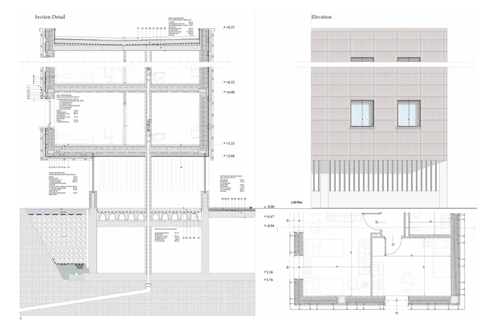
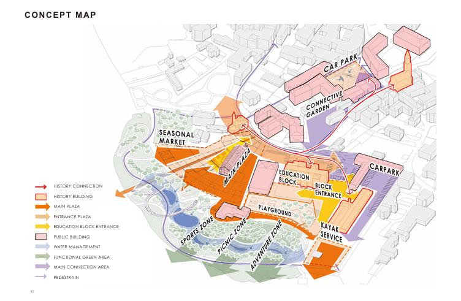
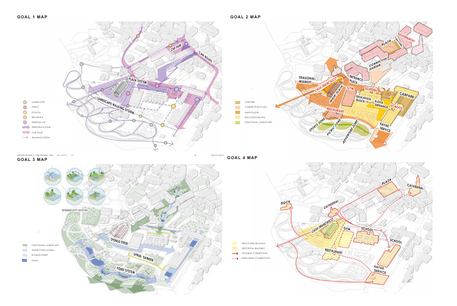

A housing proposal for Via Ortles that connects residential life with the regeneration of a former industrial district. The work develops the design from urban context and spatial organisation through structure, services and construction details.
Academic team project with Beren Denizkurt and Xiaochen Qin. Studio: Andrea Tartaglia and Giovanni Castaldo; tutors Silvia Moretti and Andrea Fossati.

A multifunctional innovative hub explored through passive strategies, daylight, energy modelling and integrated building systems. Detailed studies connect unitised opaque panels and glazed façades with the wider architectural proposal.
Academic team project, Group 4. Studio: Gabriele Masera and Matteo Brasca.

The Precampel Community Hub and Casa Francesco project brings public life back to the Lake Pusiano waterfront. Landscape connections and community programmes work alongside the sensitive reuse of a historic building, supported by life cycle assessment studies.
Academic team project with Chihim Liew, Nahal Khamsehzadeh and Yuji Luo. Studios: Manuela Grecchi, Elena Bianchi, Angela Colucci and Hadi M. Zadeh.
ACADEMIC COURSEWORK
A visual archive of design, conservation, environmental and engineering coursework developed at Politecnico di Milano.
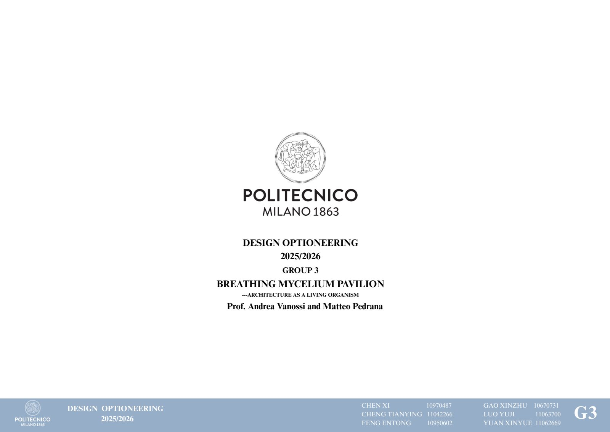
Parametric design · 2025/26
A parameter-driven pavilion developed through site analysis, geometry studies and iterative design optioneering.
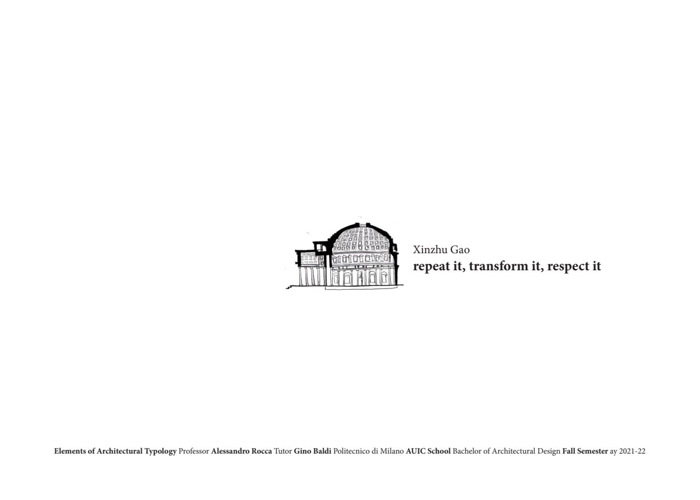
Architectural theory · 2021/22
A study of recurring architectural elements and their transformation into new spatial and formal meanings.
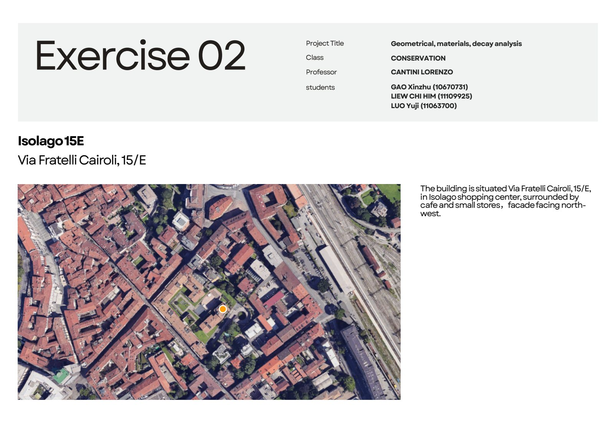
Conservation · 2024/25
Geometric survey, material recognition and decay mapping for an existing facade in Isolago.
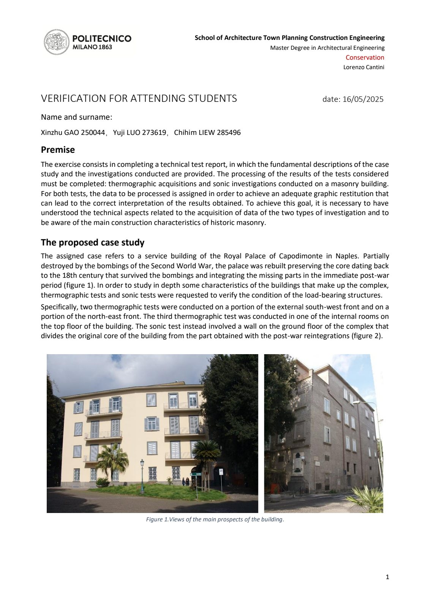
Conservation · 2024/25
Thermographic and sonic investigations used to interpret construction features and discontinuities in historic masonry.
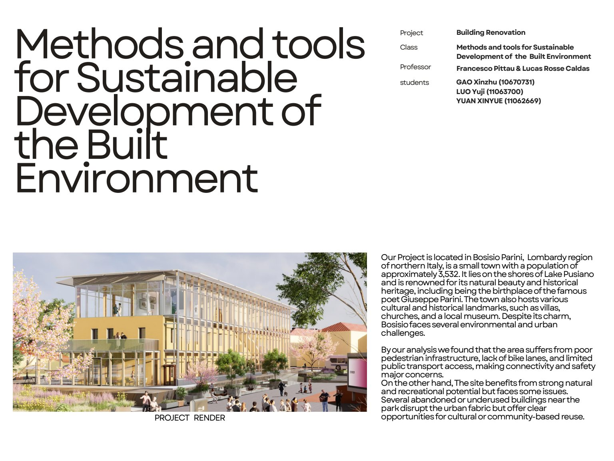
Life cycle assessment · 2025/26
A focused extension of Project 03, comparing renovation scenarios, biogenic carbon storage and climate-neutral design strategies.
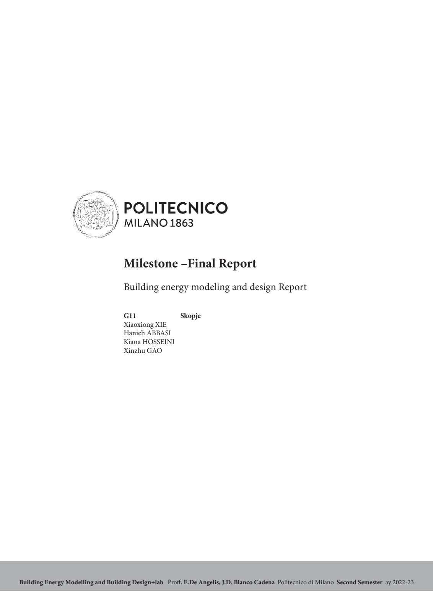
Energy modelling · 2022/23
Climate analysis, envelope optimisation, dynamic simulation, thermal bridges and detailed building operation studies.
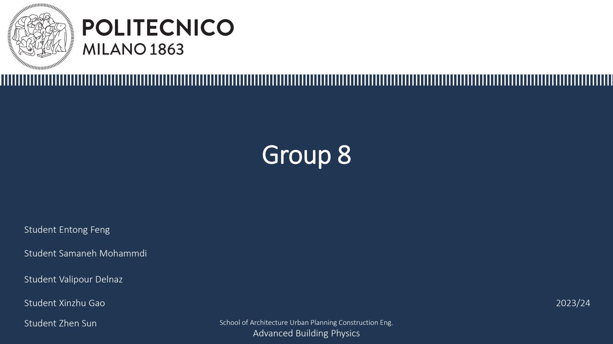
Building physics · 2023/24
A performance study for a building in Alicante, connecting climate, thermal zones and environmental design parameters.
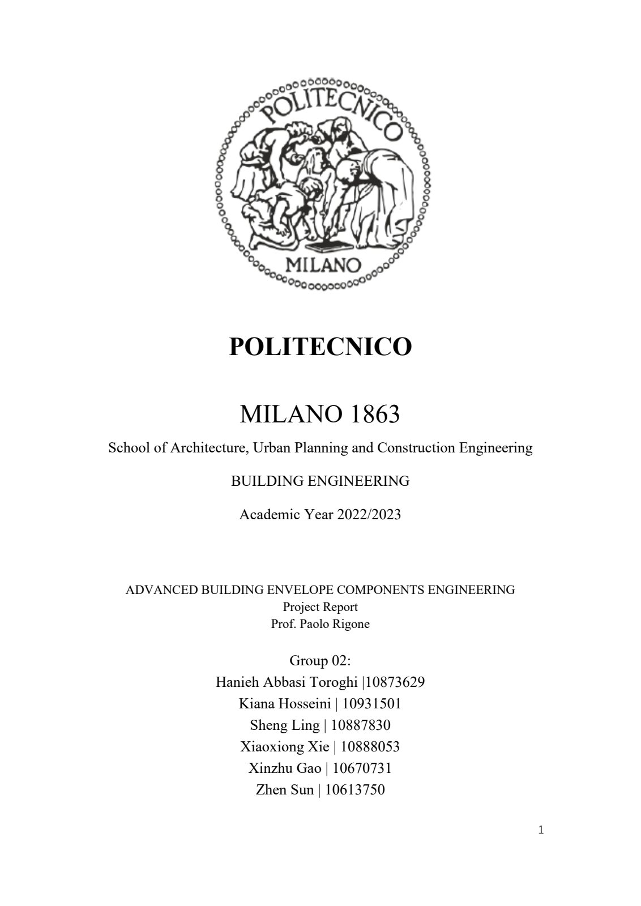
Envelope engineering · 2022/23
Curtain wall design developed through static, glass, thermal, shading, fire-safety and maintenance analyses.
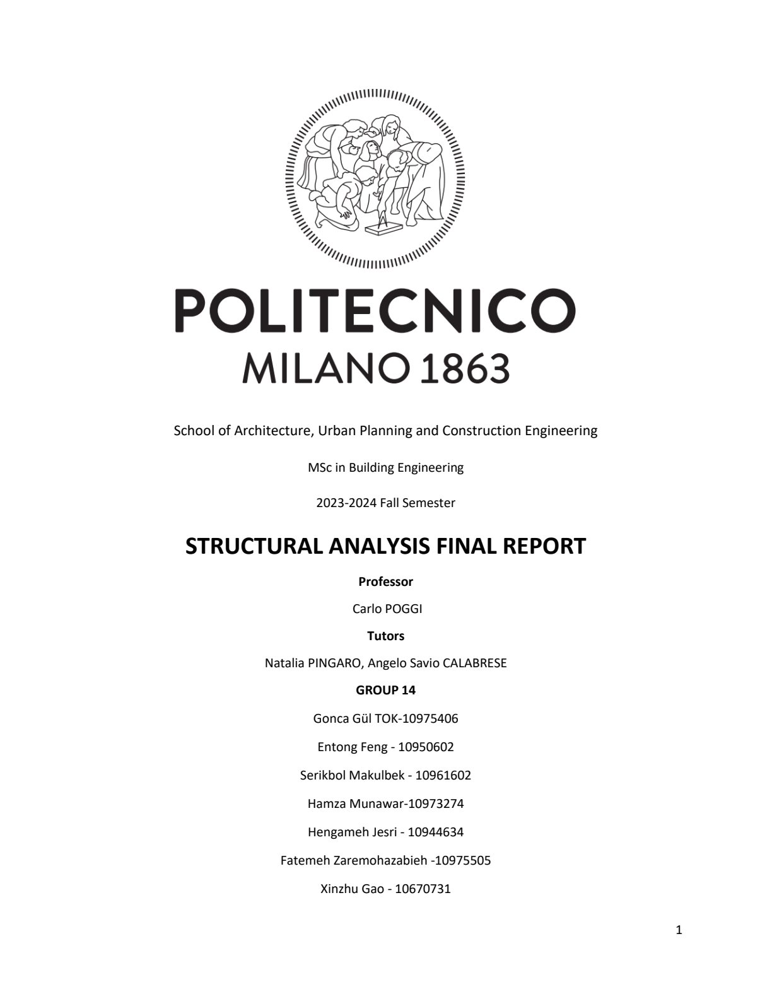
Structural engineering · 2023/24
Modelling and verification of a steel frame, from actions and load combinations to internal forces, displacement and member pre-design.
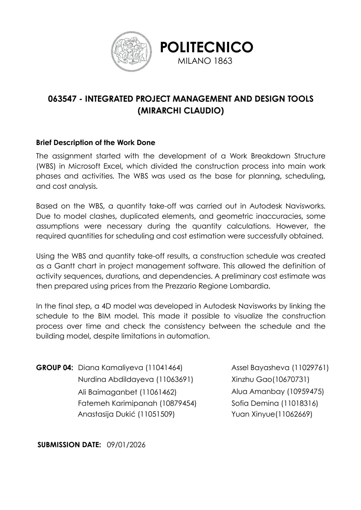
BIM & project management · 2025/26
WBS, clash detection, quantity take-off, scheduling, cost estimation and 4D BIM coordination in one delivery workflow.
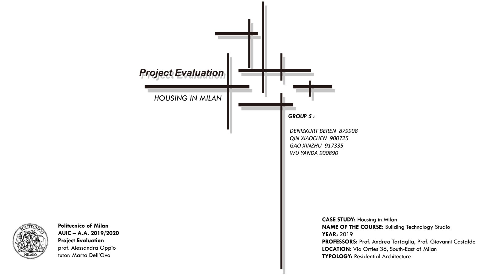
Project evaluation · 2019/20
Approximate and detailed cost analysis combined with multicriteria and sensitivity analysis for the Social Housing project.
02 / WORK EXPERIENCE
Paolo Bodega Architect
Contributed to the design of an amusement park project in Benghazi, Libya, using AI for early-stage design exploration and concept renderings.
China Institute of Building Standard Design & Research · Beijing
Mixed-use design and AI-assisted architectural visualisation.
waa · Beijing
Architectural and interior drawings, site research and models.
03 / PRACTICAL EXPERIENCE
Assistant to architect Elena Bianchi · Precampel
Conservation-sensitive adaptive reuse and community space.
Studio di Ing. Stefano Valente · Como
Historic villa renovation, client coordination and site support.
Urban block renovation focused on public space integration and urban revitalisation.
Team proposal for a community hub on a post-industrial site near the train station, integrating new commercial programmes.
Urban stitching strategy reconnecting the Golden Horn riverbank with the historic city through pedestrian corridors and public plazas.
Spatial heritage documentation through detailed drawings and phenomenological mapping. Studio: Alessandra Kluzer.
04 / ABOUT & CV
I am Xinzhu Gao, an architectural designer based in Lecco, Italy, pursuing an MSc in Building and Architectural Engineering at Politecnico di Milano. My work connects architectural design, heritage renewal and environmental performance.
Experience in Italy and China has shaped my approach to design development, construction coordination and visual communication. My current research explores reversible timber construction and sustainable alpine hospitality.
Download CV ↓Politecnico di Milano · In progress, expected October 2026
Politecnico di Milano
North China University of Technology
My skills connect architectural design with engineering analysis and research, developed through coursework, collaborative projects and practice in Italy and China.
I develop architectural and urban design proposals through site analysis, typological studies and historical references, connecting spatial organisation, public life and architectural expression.
My coursework and renovation projects explore existing buildings, heritage values and conservation strategies, relating sensitive interventions to new uses and the wider urban context.
My academic work covers structural mechanics and statically indeterminate systems, together with preliminary design and verification of reinforced concrete and steel members. I explain assumptions, calculation methods and the limits of the analysis.
I explore building energy modelling, applied building physics and envelope engineering, and use life cycle assessment to compare material and renovation options. In the Casa Francesco project, environmental assessment connects with urban design and adaptive reuse.
I use Rhino and Grasshopper to explore parameter-driven design alternatives. My ongoing MSc thesis investigates reversible CLT glamping units, connecting design development with energy strategies, assembly logistics and life cycle assessment.
My project management and building evaluation coursework supports structured project assessment. I communicate design and analytical work through coordinated drawings, diagrams, technical reports and evidence-based presentations, with clear sources and team contributions.
AutoCAD · Revit · Rhino · Grasshopper · SketchUp · Adobe Photoshop, Illustrator & InDesign · Enscape · IESVE · Climate Studio · LCA · Parametric design · AI-assisted rendering
Mandarin — native · English — written B2, spoken C1; IELTS 6.5 · Italian — A1, in progress
MSc thesis: reversible CLT glamping units for Piani d’Erna, Lecco, integrating BIPV, assembly logistics and whole-building life cycle assessment.
LEED Green Associate candidate · Completed One Click LCA training for LEED v4.
05 / CONTACT